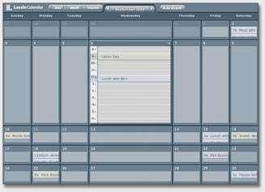

This application opens in a window. If you don't see it, you may need to bring that window to the front.
Click through months,
noting that only data is requested from the server—no layout or graphic
content. Click on a day: it expands in place, providing a visual indication
of the day's timeline.
To change the time of an event, simply drag it. Notice that the view automatically
scrolls as you drag. If you want to get more details, simply click and the
info panel slides in. Notice how the layout adjusts dynamically.
Because it's web-based, it can be updated and read from anywhere. This calendar, with its drag-n-drop interface, graceful information hiding and revealing, and data-filtering, shows the real power of the web for bringing people together.